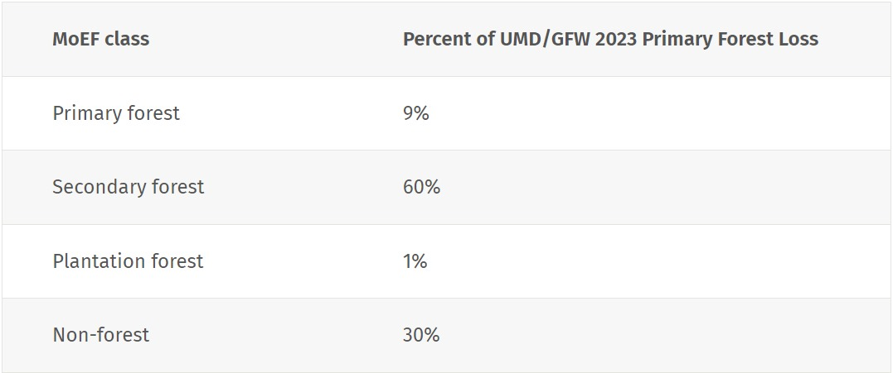

By Liz Goldman and Sarah Carter, April 4 2024

New tree cover loss data from the University of Maryland’s GLAD lab (UMD) and available on Global Forest Watch (GFW) shows declines in primary forest loss in some countries but a persistent rate overall in 2023. What does the data measure, what is different this year and how does it compare to other official estimates of deforestation? Here is what you should know about the new data.
The tree cover loss data from UMD captures the annual loss of all trees taller than five meters for the calendar years between 2001 and 2023. The tree cover loss data includes the loss of trees in natural forests as well as in plantations and tree crops (though notably, the primary forest data we use to filter the loss in the tropics excludes plantations, tree crops and regrowing forests). Loss of this tree cover can be due to human or natural causes and can be permanent or temporary.
Deforestation differs in that it only refers to a human-caused, permanent change from forest to another land use. Some forms of tree cover loss, such as conversion of a natural forest to agricultural land, are considered deforestation, while other forms of tree cover loss, such as timber harvesting in plantation forests or natural disturbances, are not — read more about the differences here. Loss in tree cover, whether deforestation or not, can be legal or illegal.
In some cases, such as in the Deforestation and Restoration Targets Tracker on the Global Forest Review, we use a proxy for deforestation. That proxy includes losses that are from small-scale agriculture in humid tropical primary forests and all commodity-driven deforestation and urbanization (inside and outside of humid tropical primary forests). Temporary losses, such as from fires or forestry activities, are not included. We don’t use this deforestation proxy in all of our reporting because it is based on coarse resolution data that is designed to limit the inclusion of temporary losses or losses in planted forests at the global scale only. Deforestation continues to be difficult to track with globally consistent data sets and there are inherent delays in confirming whether loss detected in satellite imagery is temporary or permanent.
Algorithm adjustments and better satellite data have improved the tree cover loss data set over time.
This year, the loss detection algorithm used by the University of Maryland to create the tree cover loss data set was supplemented by information from the DIST-ALERT land disturbance data set. Late season changes are sometimes missed in the tree cover loss data due to insufficient satellite data and cloud cover and are attributed to the following year. DIST-ALERT showed patches of tree cover loss that were originally missed by the tree cover loss data, and these were manually reviewed and included for 2023.
Employing DIST-ALERT helped especially to detect loss from late season forest fires in boreal forests and late season clearing in the tropics that would have otherwise appeared in the 2024 data. The DIST-ALERT data also helped detect some tree cover loss due to flooding and mining. The use of alerts resulted in a 3.7% increase in global tree cover loss detected. Most of the changes affected the boreal regions, while for the rest of the globe, the increase was only 1.7%. It is important to note that since most of the added areas would have otherwise been detected in 2024, we do not believe this change in the mapping approach for 2023 will have any impact on long-term trends in the data
Additional changes to the time series include adjustments to the algorithm for the years 2011-2014 and 2015 onwards and the incorporation of Landsat 8 data starting in 2013. These changes make it easier to detect smaller scale changes, such as loss due to fires, selective logging and shifting agriculture. Variations in satellite image availability also mean there are inconsistencies with the quality and number of images available to capture data each year.
To address these inconsistencies, we:
The tree cover loss from fire data from UMD allows us to distinguish fire-driven loss from other tree cover loss by assigning likelihood of loss due to fire to each 30-meter tree cover loss pixel, breaking the data into loss due to fire and loss due to other drivers, such as agriculture or logging. The tree cover loss due to fire data includes natural or human-ignited fires that result in direct loss of tree canopy cover. The data captures wildfires, fires used to clear land for another use and intentionally set fires that result in tree cover loss (including escaped fires started by humans for purposes related to agriculture, hunting, recreation or arson). Instances where trees are felled and later burned are not included, however, since the initial driver of loss is mechanical removal.
This data allows us to better understand how fire impacted tree cover loss in 2023. For example, fire played especially large roles in Bolivia and Canada — learn more about our findings from the 2023 data here.
Even though fires often do not result in a permanent change in land use, they are still an important source of carbon emissions and can lead to feedback loops of increasing emissions, hotter temperatures, drier forests and more fires.
In our analysis of the UMD data, we largely focus on tree cover loss in tropical primary forests because tropical forests experience the vast majority (over 96%) of the world’s deforestation, and loss in those areas has huge impacts on biodiversity and carbon storage. Even if these losses are eventually reversed, it will take decades for these habitats and carbon stocks to recover, and permanent biodiversity loss may occur.
PRODES — the official forest monitoring system for the Amazon from Brazil’s National Institute for Space Research (INPE) — and the UMD data have methodological and definitional differences that are important to understand when comparing these two data sources. PRODES measures clear cut deforestation and anthropogenic forest losses by fire larger than 6.25 hectares, whereas UMD captures loss larger than 0.09 hectares of all trees taller than five meters. These are both important measures that help us understand how forests are changing since deforestation, forest fires and small disturbances to forest canopy can all lead to impacts on climate, biodiversity and ecosystem services.
Overlaying the UMD/GFW primary forest loss data for 2023 with the official Indonesia land cover map from the Ministry of Environment and Forestry (MoEF) shows that 70% occurred within Indonesia’s official forest cover classes, with the remaining 30% taking place in mixed dry land agriculture, shrubland, swamp shrub and other land cover types. Approximately 144 thousand hectares of loss were found to be both within Indonesia’s official forest land cover classes and with a patch size larger than two hectares. Of these 144 thousand hectares, about 15 thousand hectares were within areas legally classified as primary forest in Indonesia.
